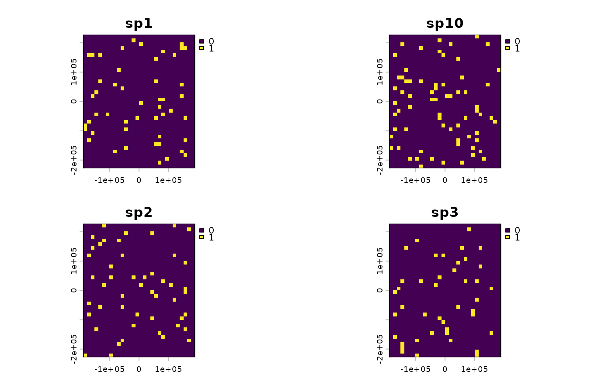

This function takes a set of occurrence point localities (e.g. from GBIF or BIEN)
and rasterizes them onto a spatial grid to produce a community data set suitable for
passing to phylospatial(). Each species' point records are aggregated within grid cells
to produce either binary presence-absence or count data.
Arguments
- x
A data frame or
sfpoints object containing occurrence records. If a data frame, it must contain columns for species identity and geographic coordinates (seecols). Coordinates in a data frame are assumed to be WGS84 longitude and latitude; an error is thrown if values fall outside valid ranges. If ansfobject, it must contain a column for species identity and have point geometry; only the first element ofcolsis used.- grid
An optional
SpatRasterto use as the target grid. If provided,resandcrsare ignored. Point records falling outside the grid extent are silently dropped.- res
Numeric giving the grid cell resolution when generating a new grid. Units are meters if
crsis provided or auto-generated, or in the units ofcrsotherwise. Ignored ifgridis provided. IfNULL(the default), a resolution is automatically chosen to produce approximately 1000 grid cells across the extent of the data. See Details.- crs
Optional CRS specification (any format accepted by
terra::crs()) for the output grid. Ignored ifgridis provided. IfNULL(the default), an Albers Equal Area projection centered on the data is automatically generated. See Details.- cols
A vector of length 1 (for
sfinput) or 3 (for data frame input) identifying the columns inxfor species, longitude, and latitude, in that order. Can be character column names or integer column indices but not a mix. Default isc(1, 2, 3). Forsfinput, only the first element (species column) is used; the remaining elements are ignored.- data_type
Character indicating the type of community data to produce. Either
"binary"(default), in which cells receive a 1 if one or more records are present and 0 otherwise, or"count", in which cells receive the number of records.
Value
A SpatRaster with one layer per species, suitable for passing directly to
phylospatial() as the comm argument. Layer names correspond to unique values in the
species column.
Details
When grid is NULL, a grid is automatically generated from the point data. If crs
is also NULL, an Albers Equal Area (AEA) projection is created based on the geographic
extent of the points, with the central meridian and latitude at the midpoint of the
coordinate ranges, and standard parallels at 1/6 and 5/6 of the latitude range. This
ensures that grid cells are equal-area, which is an assumption of various functions in the
phylospatial package. Users working with other spatial layers (e.g., environmental rasters)
may want to supply a grid or crs that matches their existing data.
When res is NULL and no grid is supplied, the resolution is automatically chosen so
that the grid contains approximately 1000 cells. Specifically, the resolution is set to
sqrt(extent_area / 1000), where extent_area is the area of the bounding box of the
projected points. The auto-generated grid is buffered by half a grid cell on each side
to ensure that edge points are not excluded.
The res parameter is interpreted in the units of the output CRS. When the auto-generated
AEA projection is used, units are meters. If a geographic (lon/lat) CRS is supplied, res
is in degrees and the resulting cells will not be equal-area; a warning is issued in this
case.
Coordinate cleaning and taxonomic name matching are outside the scope of this function.
Users are encouraged to clean occurrence data beforehand (e.g., using the CoordinateCleaner
package) and to ensure that species names in the occurrence data match the tip labels of
their phylogeny before proceeding to phylospatial().
See also
phylospatial() for constructing a spatial phylogenetic object from the output.
Examples
# \donttest{
# simulate some occurrence records
set.seed(42)
occ <- data.frame(
species = sample(paste0("sp", 1:10), 500, replace = TRUE),
x = runif(500, -122, -118),
y = runif(500, 34, 38)
)
# grid the occurrences with auto resolution (~1000 cells)
comm <- ps_grid(occ)
#> Grid resolution set to 12639 (in CRS units) to target ~1000 cells.
terra::plot(comm[[1:4]])

# specify columns by name
comm <- ps_grid(occ, cols = c("species", "x", "y"))
#> Grid resolution set to 12639 (in CRS units) to target ~1000 cells.
# grid at a specific resolution (50 km)
comm <- ps_grid(occ, res = 50000)
# use a custom grid
template <- terra::rast(res = 0.5, xmin = -123, xmax = -117, ymin = 33, ymax = 39,
crs = "EPSG:4326")
comm2 <- ps_grid(occ, grid = template)
# from sf points
occ_sf <- sf::st_as_sf(occ, coords = c("x", "y"), crs = 4326)
comm3 <- ps_grid(occ_sf, cols = "species")
#> Grid resolution set to 12639 (in CRS units) to target ~1000 cells.
# }